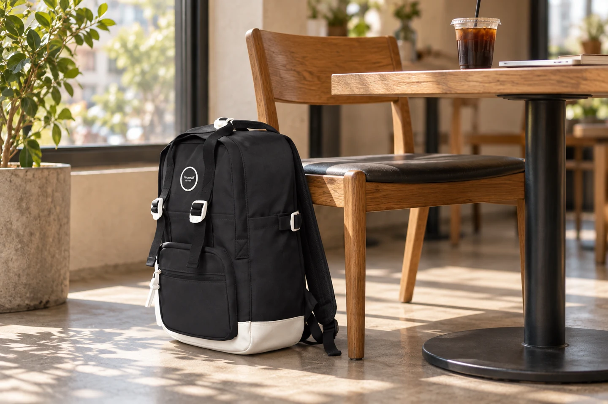

카페에서 백팩과 음료를 함께 둘 때: 넘어짐을 줄이는 자리

카페에서는 백팩과 음료를 좁은 테이블 주변에 함께 두게 됩니다. 가방을 의자 뒤에 걸거나 컵을 앞주머니에 넣는 행동은 잠깐 편해 보여도 넘어짐과 누수 위험을 키울 수 있습니다. 앉기 전 자리부터 정해 보세요.
가방을 통로 쪽에 두지 않기
의자 옆 바닥에 둘 때는 사람이 지나는 방향을 피하고, 끈이 발에 걸리지 않도록 본체 가까이 모읍니다. 다른 손님이나 직원의 동선을 막는다면 좌석 안쪽으로 옮깁니다.
음료는 가방과 분리하기
뚜껑이 닫힌 음료라도 가방 위나 열린 주머니에 올려 두지 않습니다. 컵이 넘어졌을 때 바로 닿는 위치를 피하고, 테이블 가장자리에서도 한 뼘 이상 여유를 둡니다.
자리에서 일어나기 전 세 가지 확인
휴대전화, 지갑, 충전기처럼 테이블에 꺼내 둔 물건을 먼저 가방의 정해진 칸에 넣습니다. 컵과 가방 끈, 의자 다리가 서로 걸리지 않았는지 본 뒤 일어나세요.
돌아온 뒤 바닥과 겉면 확인하기
가방을 다시 멜 때 바닥에 닿았던 면과 지퍼 주변을 살핍니다. 음료가 샌 흔적이 있다면 문지르기 전에 오염된 위치를 기록하고 제품의 관리 안내를 확인하세요.
혼잡한 시간에는 ‘발밑 한 칸’ 남기기
사람이 자주 지나는 시간에는 의자 바로 옆이 아니라 내 다리 안쪽에 가방을 두면 끈이 통로로 나오는 일을 줄일 수 있습니다. 다만 가방이 의자 다리와 눌리거나 발에 걸리지 않는지 확인해야 합니다. 카페마다 좌석 간격이 다르므로 고정된 한 가지 위치보다 주변의 움직임을 기준으로 선택하세요.
음료를 들고 이동할 때
한 손에 음료, 한 손에 백팩을 들고 문을 열어야 한다면 잠시 테이블에 가방을 두고 순서를 나누는 편이 안전합니다. 컵을 가방 위에 올리거나 지퍼 사이에 끼우지 마세요. 다른 사람이 문을 잡아 주더라도 가방 끈이 손잡이나 의자에 걸리지 않는지 마지막으로 확인하면 좋습니다.
참고·안내
- Himawari No.1088M 제품 정보
- 실제 Himawari No.1088M 제품을 참조해 새로 생성한 AI 연출 이미지입니다. 카페 좌석에서는 주변 동선을 함께 확인하세요.
자주 묻는 질문
백팩을 의자 등받이에 걸어도 되나요?
의자 형태와 주변 통로에 따라 다릅니다. 끈이 바닥에 닿거나 다른 사람이 지나가는 방향으로 튀어나오면 바닥의 안정된 자리로 옮기세요.
음료를 옆 물병 포켓에 넣어도 되나요?
포켓 크기와 컵의 형태가 맞는지 확인해야 합니다. 뚜껑이 열리거나 넘어질 수 있는 컵은 가방과 분리해 운반하세요.